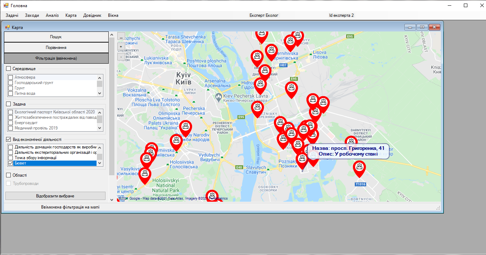

Крок 6. Обрання маркеру
Серед відображених маркерів експерт шукає маркер, якому необхідно відредагувати дані прив’язки. В цій інструкції розглянемо бювет за адресою: просп. Григоренка, 41.

Важливо! Кнопки керування на карті
На карті є три кнопки:
« _ » Приховує бокову панель управління
« + » Збільшує приближення на мапі
« – » Зменшує приближення на мапі